Livskompassen v2
Design & roadmap — vad som byggs vs idéer. Piltangenter ← → eller knappar nedtill.
Guld-kompassen behålls i alla nya teman.
2026-05-23 · Ingen blå/turkos i nya riktningen
Färgpolicy
Blå, turkos, indigo och cyan avvecklas från produkt-UI. Accenter: guld, amber, varm grå, cream.
- Ersätter Tema C/E (aurora blå-grön)
- Nya teman: F Guld Pansar · G Varm Hamn · H Grafit Grey Rock
- Se
docs/design/COLOR-POLICY.md
Tema F — Guld Pansar
Valv-textstil: SERVER-TIDSSTÄMPEL, SÄKRAD POST, monospace. Moduler: Hero, Valv, BIFF, Widget.
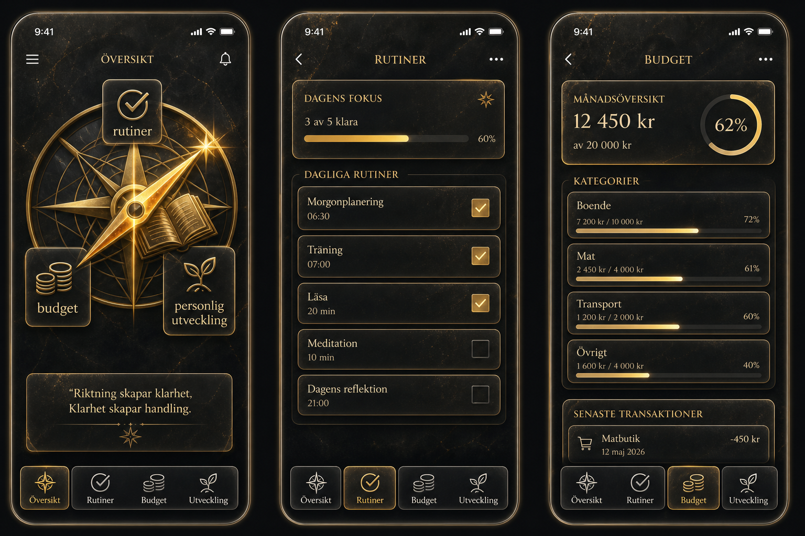
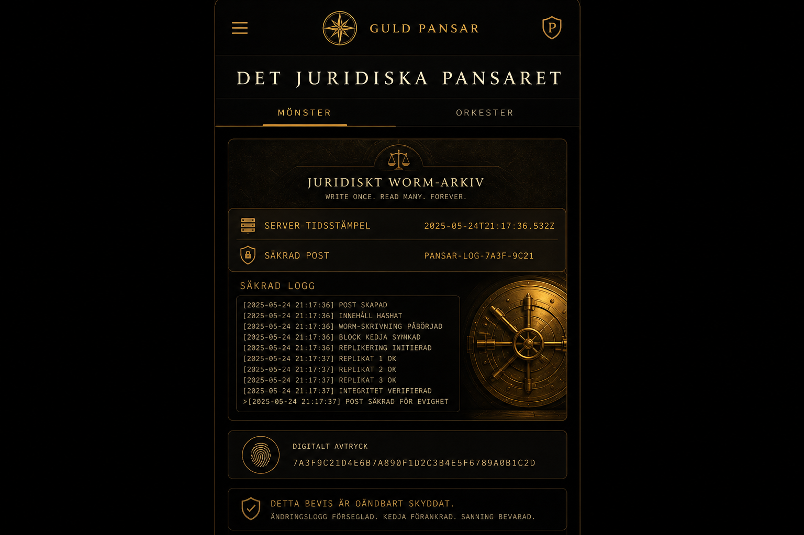

Tema G — Varm Hamn
Espresso + rose-gold. Moduler: Hero, Barnfokus, KBT-Transformatorn, Widget.
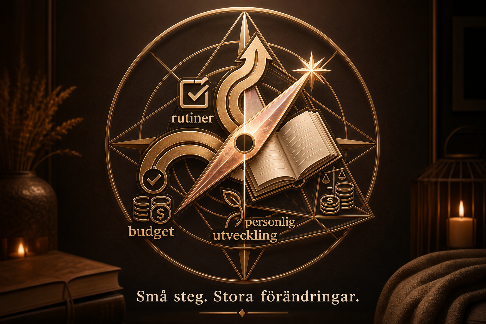
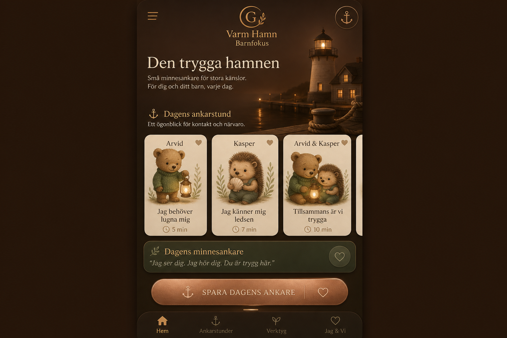
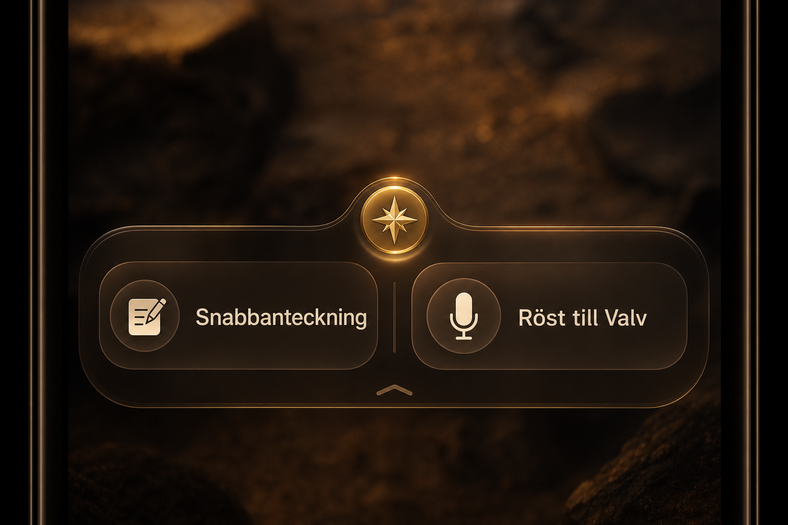
Tema H — Grafit Grey Rock
Slate + endast guld som accent. Moduler: Hero, Hub, Kompis, Valv, Widget.
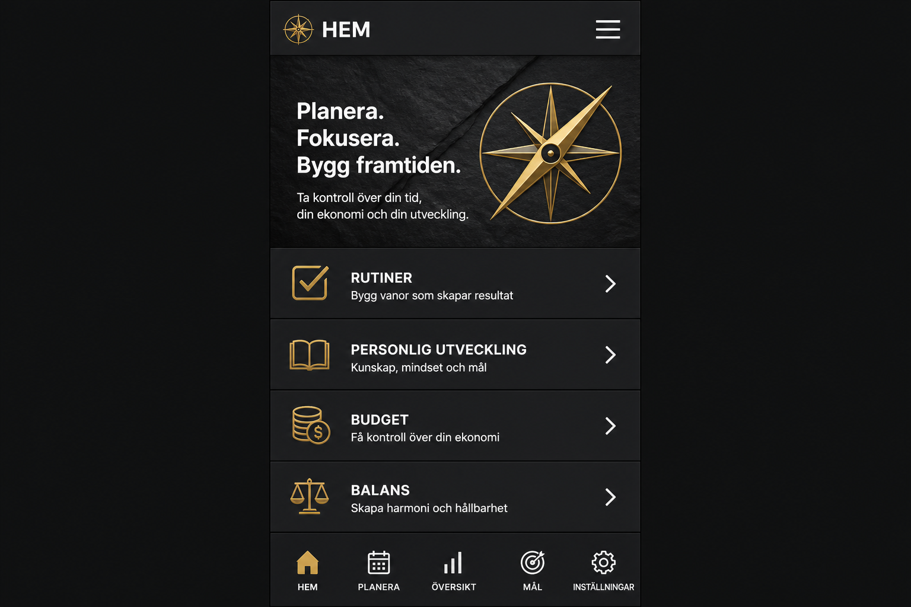
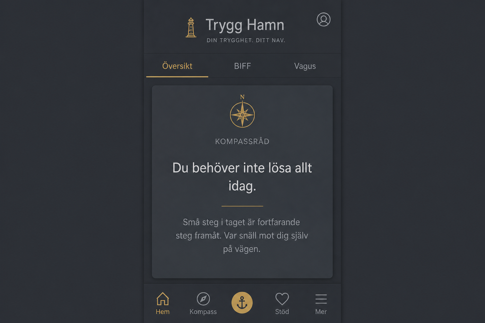
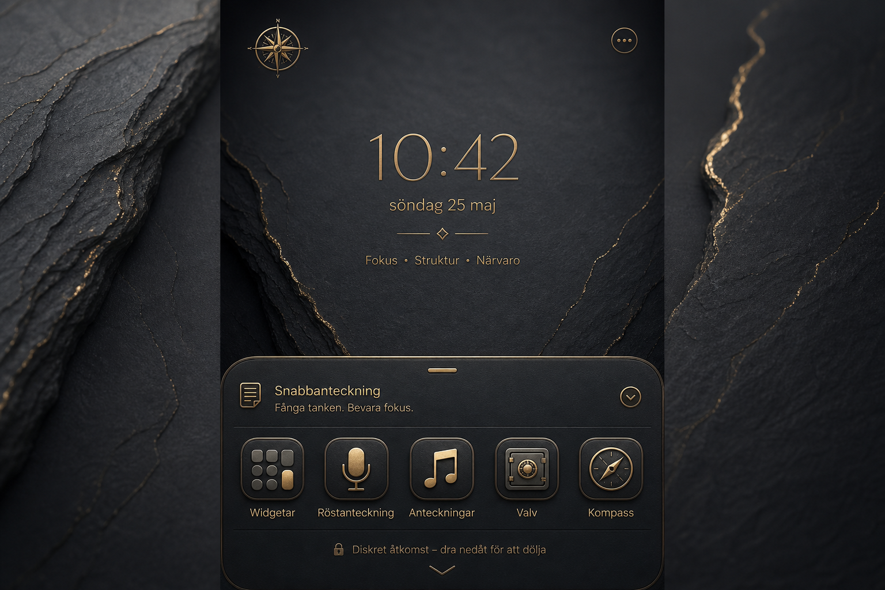
BYGGS Widget bar (Fyren Edge)
- Mikrofon → röst till text → WORM i
reality_vault - Snabbanteckning → ett fält objektiva fakta → lås i Valvet
- Dold — kompass-prick på kanten, expanderar vid tryck
- Spec:
docs/design/WIDGET-BAR-SPEC.md
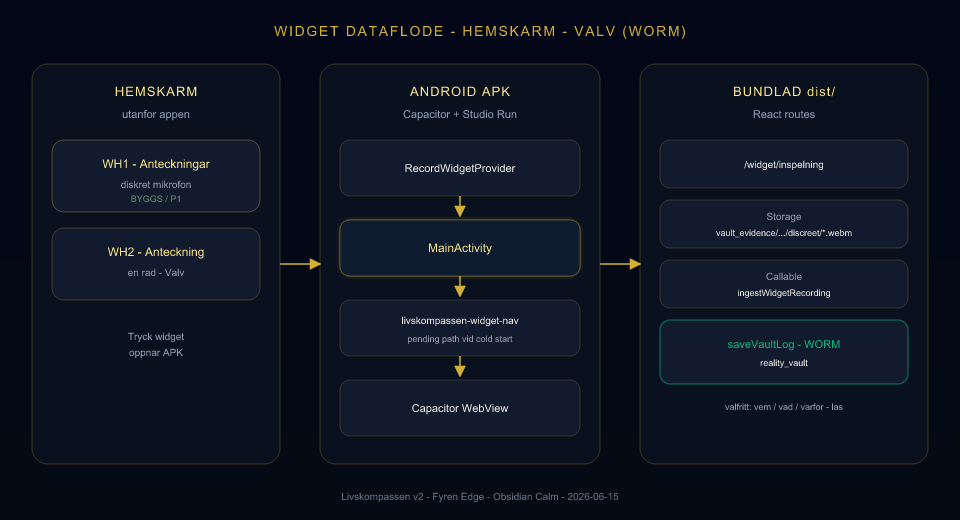
REDAN I KOD Locked & Sacred
| Feature | Route |
|---|---|
| Middagsfrågan | /familjen |
| Valv Mönster + Orkester | /dagbok?tab=bevis |
| Verklighetsvalvet WORM | reality_vault |
| BIFF / Hamn | /hamn · analyzeMessage |
| MåBra reframing (manuell) | /mabra |
| Dossier, Speglar, Kompasser | deployade MVP |
BYGGS P1 Nästa kodvåg
- FyrenWidgetBar + quick vault save
- KBT-Transformatorn (3 kort, strukturerad mabraCoach)
- BIFF Triage-UI (brus dolt + logistik 10/90)
- Barnfokus — profilkort, minnesankare, påminnelse
- Kompassråd + valt tema F/G/H tokens
- Valv-typografi enligt F (SÄKRAD POST-kort)
BYGGS P2
- Svart på vitt → lås bevis (Speglar/Valv)
- VIVIR-snabbkoll (akutingång)
- Orkester-trio UI (Vävaren / Spejaren / Säkraren)
- Klickbara citations i Valv-Chat
IDÉ Handlingshub (e-post)
Koppla utvalda adresser (t.ex. advokat, skola, myndighet) till egen hub — kalender + anteckningsbok. Inte i Fas 1.
- Åtkomst via widget ( fjärde ikon, streckad i mockup)
- Zero Footprint för känslig läsning
- Separat silo — får inte blanda Valv-RAG med Kunskap
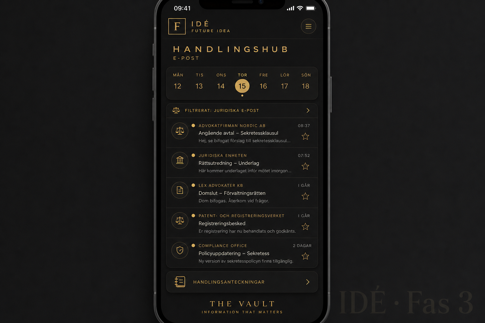
IDÉER Övrigt (backlog)
- Macro-dock NEXUS / BARN / VÄXA / VALV (ersätt FloatingDock?)
- E-post → automatisk inkorg-sortering (G10 finns delvis)
- Dölj Bevis-flik (plausible deniability)
- Genkit-migrering (V1 wait)
- Payroll / lönespec i ekonomi (Fas 2, server-only)
Kompassen stannar
Guld-kompassen är produktidentitet — hero, appikon, widget-prick, Fyren long-press.
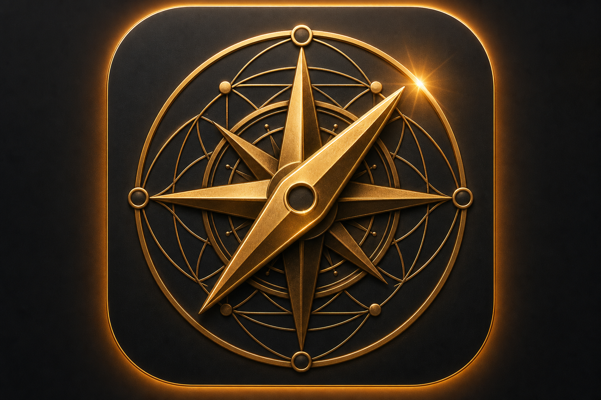
Nästa steg för dig
- Välj tema: F, G eller H (eller kombination: F för Valv, G för Familjen)
- Skriv
valt tema Fi Cursor - Bläddra mockups:
docs/design/themes/ - Detta bildspel:
docs/design/slideshow/index.html